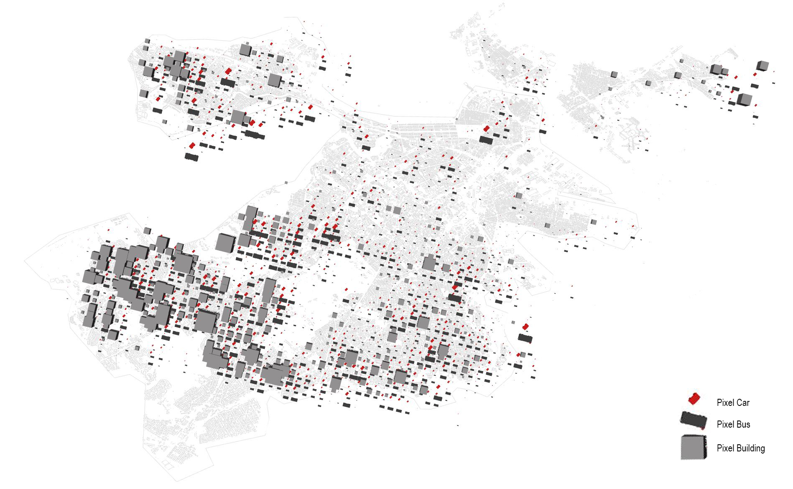
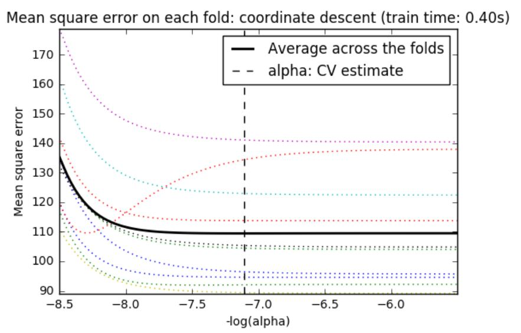
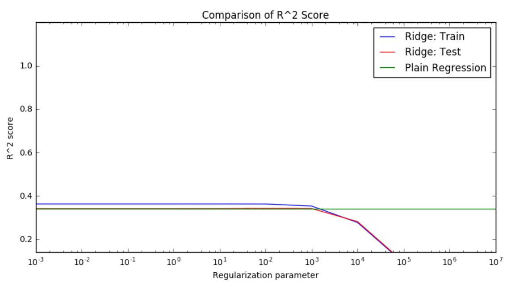
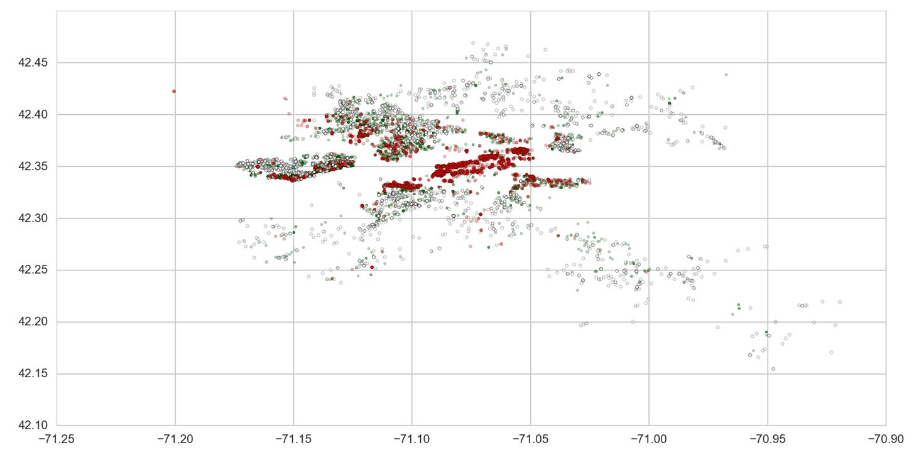

SECTION 1 Regression
Boston Rent Price Data
Data Cleaning and Exploration
Importing Data
def GetPandasFromFileCSV(path):
return pd.read_csv(path, delimiter=',')
df = GetPandasFromFileCSV("[dataFinal]/_RentPriceTruliaMergeFinal.csv")
print df.shape
print df.columns.values
(13049, 47)
['pixelPlant' 'pixelPole' 'pixelLake' 'pixelRoad' 'pixelGrass' 'pixelWall'
'pixelCar' 'propertiesAsses' 'pixelSea' 'numCraigslistHouse' 'pixelRiver'
'pixelBus' 'pixelCeiling' 'pixelPath' 'pixelBuilding' 'crime' 'pixelFence'
'walkSchool' 'walkMbta' 'energySiteEUI' 'pixelPerson' 'pixelTree'
'pixelVan' 'walkPark' 'walkUniversity' 'pixelSidewalk' 'pixelGround'
'pixelMountain' 'pixelPalmTree' 'pixelHouse' 'pixelBridge' 'pixelSign'
'pixelRailing' 'pixelField' 'pixelWindow' 'pixelGrandstand'
'numCraigslistRoom' 'pixelSky' 'Latitude' 'Longitude' 'Address' 'Zip'
'RoomType' 'Bathrooms' 'SQFT' 'SQM' 'Price']
Total 13049 datasets with 47 features including rent prices were collected. Features consist of three main class:
web scrapping from Trulia (Baseline data), google place information, craiglist data (Socio-economic data), and google street view data (visual data).
for col in df.columns:
print col,len(df[df[col].isnull()])
RoomType 995
Bathrooms 125
SQFT 8630
There are 8630 missing values for "SQFT". If we drop all missing rows out of total datasets, it might affect to the resutls predicting rent prices. Therefore, we decided to conduct KNN for missing values of "SQFT" by using "RoomType" and "Bathrooms" after removing null rows of those two features.
Imputing Missing Data Using KNN
k=4 knntest = data[data['SQFT'].isnull()] knntrain = data[data['SQFT'].isnull()==False] xknn_train = knntrain[['RoomType','Bathrooms','Longitude','Latitude','Zip']].values yknn_train = knntrain['SQFT'].values xknn_test = knntest[['RoomType','Bathrooms','Longitude','Latitude','Zip']].values neighbours = KNN(n_neighbors=k) neighbours.fit(xknn_train, yknn_train) yknn_test = neighbours.predict(xknn_test) data.set_value( data['SQFT'].isnull(),'SQFT',yknn_test) print data.shape
(11569, 47)
After conducting KNN for imputing missing values of "SQFT", 11569 datasets with 47 features without any missing values are obtained.
Histogram of rent prices in Boston

Plotting data to find relationships
theRow = 5
theCol = 8
count = 0;
countColor = 0;
for j in range(theCol):
for i in range(theRow):
if(countColor == len(cmaps)): countColor =0
ax[j,i].scatter(data[data.columns[count]],y, c=cmaps[countColor])
ax[j,i].set_title('Rent Prices vs.'+data.columns[count])
ax[j,i].set_title('Rent Prices vs.'+data.columns[count])
count+=1
countColor+=1
fig.tight_layout()
fig.savefig("pic", transparent = True)
Relationships between features and rent prices


Linear Regression model with Baseline features
#base linear regression base=['Longitude', 'Latitude','Bathrooms','Zip','RoomType'] xlinear = data[base].values n = xlinear.shape[0] n_train = int(np.round(n * 0.5)) # First 40% train, remaining test xlinear_train = xlinear[:n_train, :] y_train = y[:n_train] xlinear_test = xlinear[n_train:, :] y_test = y[n_train:] reg = Lin_Reg() #automatically fits intercept (adds column of one's) for you reg.fit(xlinear_train, y_train) ylinearpred = reg.predict(xlinear_test) train_r_squared_plain = reg.score(xlinear_train, y_train) test_r_squared_plain = reg.score(xlinear_test, y_test) print 'Plain Regression: R^2 score on training set', train_r_squared_plain print 'Plain Regression: R^2 score on test set', test_r_squared_plain print reg.coef_
Plain Regression: R^2 score on training set 0.335073654303
Plain Regression: R^2 score on test set -2.09303867662
[ -76.33180909 134.4113976 0.83954563 -0.86976465 -1.40934513]
Linear regression : R_square on test set is negative, thus the features do not capture price prediction at all, clearly the tain set overfits from the negative r square of the test set.
Feature selection : forward and backward selection
Step-wise forward subset selection:
[4, 6, 8, 9, 10, 12, 13, 14, 15, 20, 21, 27, 30, 34, 36, 37, 38, 39]
['pixelWall' 'propertiesAsses' 'pixelWater' 'pixelBus' 'pixelCeiling'
'pixelBuilding' 'crime' 'walkSchool' 'walkMbta' 'walkPark'
'walkUniversity' 'pixelBridge' 'pixelField' 'pixelSky' 'Longitude' 'Zip'
'RoomType' 'Bathrooms']
Step-wise backward subset selection:
[4, 5, 6, 8, 9, 10, 12, 13, 14, 15, 20, 21, 27, 30, 36, 37, 38, 39]
['pixelWall' 'pixelCar' 'propertiesAsses' 'pixelWater' 'pixelBus'
'pixelCeiling' 'pixelBuilding' 'crime' 'walkSchool' 'walkMbta' 'walkPark'
'walkUniversity' 'pixelBridge' 'pixelField' 'Longitude' 'Zip' 'RoomType'
'Bathrooms']
With forward and backward feature selections,'pixelWall' 'propertiesAsses' 'pixelWater' 'pixelBus' 'pixelCeiling'
'pixelBuilding' 'crime' 'walkSchool' 'walkMbta' 'walkPark' 'pixelCar'
'walkUniversity' 'pixelBridge' 'pixelField' 'pixelSky' 'Longitude' 'Zip'
'RoomType' 'Bathrooms' are the releveant features. The two selectiosn are almost identitcal with only difference in selcting feature 34 which is 'pixelSky'.
Splitting Test and Train by 50%
from sklearn.cross_validation import train_test_split X_new = data[forward] X_train, X_test, y_train, y_test = train_test_split(X_new, y_new, test_size=0.5,random_state=2) print X_train.shape,X_test.shape
(5782, 18) (5782, 18)
Linear regression model with results of forward selection
# Fit plain regression on train set, evaluate on train and test sets reg = Lin_Reg() #automatically fits intercept (adds column of one's) for you reg.fit(X_train.values, y_train.values) coefficients = reg.coef_ train_r_squared_plain = reg.score(X_train.values, y_train.values) test_r_squared_plain = reg.score(X_test.values, y_test.values)
Names: ['pixelWall' 'propertiesAsses' 'pixelWater' 'pixelBus'
'pixelCeiling' 'pixelBuilding' 'crime' 'walkSchool'
'walkMbta' 'walkPark' 'walkUniversity' 'pixelBridge'
'pixelField' 'pixelSky' 'Longitude' 'Zip'
'RoomType' 'Bathrooms']
[ 9.57112588e-02 3.88829785e-08 6.09909086e-01 -2.73663236e+00
-1.42941172e-01 -3.13893245e-01 9.59256013e-02 -2.19593517e-02
-6.48558337e-01 1.09956168e-01 1.09433773e-01 1.95153899e-01
-1.17516581e+00 -2.78048468e-02 1.53290920e+01 -3.18774394e-01
-1.76018363e+00 1.33467727e+00]
Plain Regression: R^2 score on training set 0.362907449873
Plain Regression: R^2 score on test set 0.341235780099
Positive coefficients : 'pixelWall' 'propertiesAsses' 'pixelWater' 'crime' 'walkPark' 'walkUniversity' 'pixelBridge' 'Longitude' 'Bathrooms'
Negative coefficients : 'pixelBus' 'pixelCeiling' 'walkSchool' 'walkMbta' 'pixelField' 'pixelSky'
'pixelBuilding''Zip''RoomType'
Linear regression model with results of backward selection
Names: ['pixelWall' 'pixelCar' 'propertiesAsses' 'pixelWater'
'pixelBus' 'pixelCeiling' 'pixelBuilding' 'crime'
'walkSchool' 'walkMbta' 'walkPark' 'walkUniversity'
'pixelBridge' 'pixelField' 'Longitude' 'Zip'
'RoomType' 'Bathrooms']
[ 9.76931515e-02 -9.42094481e-02 3.90477165e-08 -6.37800559e-01
-2.81915209e+00 -1.37706918e-01 -2.95638331e-01 9.67874732e-02
-2.40601968e-02 -6.59041502e-01 1.17612049e-01 1.07035446e-01
1.74143452e-01 -1.14936346e+00 1.51944758e+01 -3.16469613e-01
-1.74123711e+00 1.34054973e+00]
Plain Regression: R^2 score on training set 0.362732669103
Plain Regression: R^2 score on test set 0.340951491149
Positive coefficients :'pixelWall' 'propertiesAsses' 'pixelWater' 'crime' 'walkPark' 'walkUniversity''pixelBridge''Longitude''Bathrooms'
Negative coefficients :'pixelCar' 'pixelBus' 'pixelCeiling' 'pixelBuilding' 'walkSchool' 'walkMbta' 'pixelField''Zip''RoomType'
Summary of feature selection

Rent Data Visualization

Pixel Water (Positive) VS Pixel Sky (Negative)

Pixel Car ,Bus, and Buildings (Negative)
For the rent price prediction, visualized waters, wall, and bridge have a positive impacts on value prediction, and visualized building, ceiling, cars, bus, field, and sky have a negative relationships. Which reflects that downtown areas along the riverside has higher rent prices than the desely packed areas (with more buildings, cars, and bus) or suburban areas (with more field and sky). Interestingly, the walkability to public transit shows negative relationship for the rent prediction.
LASSO regression with cross validation
Lasso:
Coefficients: [-0. 0. -0. -0. 0.76547856 -0.22408111
1.63120221 -0.1075036 -0.96097961 -0.31586081 -0.33357012 -0.08140168
-0.24282322 0.47236064 -0.03352522 -0. -0. -0.00506453
-0.12270396 -0.03289422 0.52521161 2.60823009 0. -0.05170436
-0. 0.10429538 -0.06819275 0.13792156 -0. -0. -0.2530241
0. -0.05272618 0.17073887 -0.17483184 0. 0.30841355
-4.02040509 -1.82723489 0.60564088]
Predictors with non-zero coefficients: [4, 5, 6, 7, 8, 9, 10, 11, 12, 13, 14, 17, 18, 19, 20, 21, 23, 25, 26, 27, 30, 32, 33, 34, 36, 37, 38, 39]
['pixelWall' 'pixelCar' 'propertiesAsses' 'numCraigslistHouse' 'pixelWater'
'pixelBus' 'pixelCeiling' 'pixelPath' 'pixelBuilding' 'crime' 'walkSchool'
'pixelPerson' 'pixelTree' 'pixelVan' 'walkPark' 'walkUniversity'
'pixelGround' 'pixelPalmTree' 'pixelHouse' 'pixelBridge' 'pixelField'
'pixelGrandstand' 'numCraigslistRoom' 'pixelSky' 'Longitude' 'Zip'
'RoomType' 'Bathrooms']
Lasso Regression: max R^2 score on training set 0.362907095798
Lasso Regression: max R^2 score on test set 0.341500403859
# Compute paths
t1 = time.time()
model = LassoCV(cv=10).fit(X_train, y_train)
t_lasso_cv = time.time() - t1
# Display results
m_log_alphas = -np.log10(model.alphas_)
plt.figure()
# ymin, ymax = 21000, 29000
plt.plot(m_log_alphas, model.mse_path_, ':')
plt.plot(m_log_alphas, model.mse_path_.mean(axis=-1), 'k',
label='Average across the folds', linewidth=2)
plt.axvline(-np.log10(model.alpha_), linestyle='--', color='k',
label='alpha: CV estimate')
plt.legend()
plt.xlabel('-log(alpha)')
plt.ylabel('Mean square error')
plt.title('Mean square error on each fold: coordinate descent '
'(train time: %.2fs)' % t_lasso_cv)
plt.axis('tight')

RIDGE regression with Regularization
Ridge:
Coefficients: [ -2.07665199e-01 3.21243374e-01 -1.56675365e-01 -7.68757640e-02
1.15886583e+00 -1.68626542e-01 1.76397079e+00 -2.59801730e-01
-1.16868335e+00 -4.00690625e-01 -6.17256746e-01 -3.69101525e-02
-2.49376412e-01 5.40575472e-01 -4.08831715e-01 -6.49069414e-01
-1.97084987e-01 -1.68626542e-01 -3.67008456e-01 -2.16347444e-01
1.12955279e+00 3.14974685e+00 1.68319785e-01 -1.50783103e-01
-6.27553120e-02 3.27417522e-01 -1.56752897e-01 3.85450574e-01
5.76958295e-03 -1.45861685e-01 -2.91891853e-01 -3.22468923e-04
-1.02435445e-01 3.43664653e-01 -1.57759259e-01 1.99583107e-01
5.82789905e-01 -4.11513701e+00 -1.96426252e+00 7.62667123e-01]
Predictors with non-zero coefficients: [0, 1, 2, 3, 4, 5, 6, 7, 8, 9, 10, 11, 12, 13, 14, 15, 16, 17, 18, 19, 20, 21, 22, 23, 24, 25, 26, 27, 28, 29, 30, 31, 32, 33, 34, 35, 36, 37, 38, 39]
Ridge Regression: max R^2 score on test set 0.362907449873
Ridge Regression: max R^2 score on test set 0.342475095729

RandomForest Regressor
max_depth = 10 regr_rf = RandomForestRegressor(max_depth=max_depth, random_state=2) regr_rf.fit(X_train, y_train) y_rf = regr_rf.predict(X_test) score = regr_rf.score(X_test,y_test)
Randomforest Regression Score: 0.59128282464
Tuning RandomForest Regressor
max_depth = 15 regr_rf = RandomForestRegressor(n_estimators = 45, max_depth=max_depth, random_state=2) regr_rf.fit(X_train, y_train) y_rf = regr_rf.predict(X_test) score = regr_rf.score(X_test,y_test) path = regr_rf.decision_path(X_test) immportance = regr_rf.feature_importances_ print score print path print immportance
(<5782x135293 sparse matrix of type '
[ 0.01779071 0.04932914 0.00543553 0.003755 0.00243932 0.01296709
0.01904369 0.02700942 0.00763381 0.02331424 0.04801845 0.00707116
0.00230556 0.02744068 0.21600341 0.41808581 0.07357969 0.03877729]
Randomforest Regression Score: 0.639845852284
Relative importances of RandomForest Regressor


Model Comparisons
Different feature-sets
Baseline = ['Longitude', 'Latitude','Bathrooms','Zip','RoomType'] Socio = ['crime', 'walkSchool', 'walkMbta', 'walkPark' , 'walkUniversity','numCraigslistRoom','numCraigslistHouse','propertiesAsses'] Viz = ['pixelWall','pixelWater' ,'pixelBus', 'pixelCeiling', 'pixelBuilding', 'pixelBridge', 'pixelField' ,'pixelSky'] Socio_viz = ['crime', 'walkSchool', 'walkMbta', 'walkPark' , 'walkUniversity','numCraigslistRoom','numCraigslistHouse','propertiesAsses','pixelWall','pixelWater' ,'pixelBus', 'pixelCeiling', 'pixelBuilding', 'pixelBridge', 'pixelField' ,'pixelSky'] Total = ['Longitude', 'Latitude','Bathrooms','Zip','RoomType','crime', 'walkSchool', 'walkMbta', 'walkPark' , 'walkUniversity','numCraigslistRoom','numCraigslistHouse','propertiesAsses','pixelWall','pixelWater' ,'pixelBus', 'pixelCeiling', 'pixelBuilding', 'pixelBridge', 'pixelField' ,'pixelSky']

As you can see the table above, the addtional socio-economic data gives better prediction compared to baseline models. To make more precise model, we tried to add visual data on top of both treshholds with only baseline and both baseline and socio-economic data. When we only add visual data, the performance of the model is not improved, but when we combined visual data into merged model, the best performance was observed in both linear regression and randomforest models. By tuning parameters through CV optimization, finalized model of all three datasets shows best performance.
SECTION 2 Classification
The 3d and 2d plot of the value of Rent Prices


Based on the mean 25 percentile and 75 percentile value of prices per sqmeter, we divided total datasets into three different classes: high, middle, and low.
PCA for Logistic Regression
from sklearn.linear_model import LogisticRegression as LogReg from sklearn.linear_model import LogisticRegressionCV as LogRegCV from sklearn.feature_extraction.text import CountVectorizer x = datacon[xIndex].values y = datacon['target'].values ###Build a classifier to distinguish between 0 and 1 # x = data.values[:, :-1] # y = data.values[:, -1] #Apply PCA to data and get the top 3 axes of maximum variation pca = PCA(n_components=3) pca.fit(x) #Remove all instances of class 2 x_binary = x_reduced[y != 2, :] #Remove all instances of class 2 y_binary = y[y != 2] #Fit logistic regression model for 0 vs 1 logistic_01 = LogReg() logistic_01.fit(x_binary, y_binary) ###Build a classifier to distinguish between 1 and 2 #Remove all instances of class 0 x_binary = x_reduced[y != 0, :] #Remove all instances of class 0 y_binary = y[y != 0] #Fit logistic regression model for 1 vs 2 logistic_12 = LogReg() logistic_12.fit(x_binary, y_binary) ###Build a classifier to distinguish between 0 and 2 #Remove all instances of class 1 x_binary = x_reduced[y != 1, :] #Remove all instances of class 1 y_binary = y[y != 1] #Fit logistic regression model for 0 vs 2 logistic_02 = LogReg() logistic_02.fit(x_binary, y_binary) #Predict a label for our dataset using each binary classifier y_pred_01 = logistic_01.predict(x_reduced) y_pred_12 = logistic_12.predict(x_reduced) y_pred_02 = logistic_02.predict(x_reduced) #Now, for each image, we have THREE predictions! #To make a final decision for each image, we just take a majority vote. n = x_reduced.shape[0] y_votes = np.zeros((n, 3)) #Votes for 0 y_votes[y_pred_01 == 0, 0] += 1 y_votes[y_pred_02 == 0, 0] += 1 #Votes for 1 y_votes[y_pred_01 == 1, 1] += 1 y_votes[y_pred_12 == 1, 1] += 1 #Votes for 2 y_votes[y_pred_02 == 2, 2] += 1 y_votes[y_pred_12 == 2, 2] += 1 #For each image, label it with the class that get the most votes y_pred = y_votes.argmax(axis = 1) #Accuracy of our predictions print 'Accuracy of combined model:', np.mean(y == y_pred)
Accuracy of combined model: 0.388101003113

Decision Tree
clfTree1 = tree.DecisionTreeClassifier(max_depth=5, criterion='gini') xIndex = ['Latitude','Longitude','pixelWall' ,'propertiesAsses', 'pixelWater', 'pixelBus' ,'pixelCeiling', 'pixelBuilding', 'crime', 'walkSchool' ,'walkMbta' ,'walkPark', 'walkUniversity' ,'pixelBridge' ,'pixelField', 'pixelSky' ,'Longitude' ,'Zip', 'RoomType', 'Bathrooms'] MyNames = ['pixelWall','walkPark'] subdf=datacon[MyNames] X=subdf.values y=datacon['target'].values # TRAINING AND TESTING Xtrain, Xtest, ytrain, ytest = X[mask], X[~mask], y[mask], y[~mask] # FIT THE TREE clf=clfTree1.fit(Xtrain, ytrain) training_accuracy = clf.score(Xtrain, ytrain) test_accuracy = clf.score(Xtest, ytest)
Accuracy on training data: 0.59
Accuracy on test data: 0.58

Decision Tree CV optimization
parameters = {"max_depth": [1, 2, 3, 4, 5, 6, 7], 'min_samples_leaf': [ 1,2, 3, 4, 5, 6]}
clf = cv_optimize(clf, parameters, Xtrain, ytrain, n_jobs=10, n_folds=3, score_func=None);
print clf.max_depth, clf.min_samples_leaf
4,1
Rethrived Accuracy with max depth 4
Accuracy on training data: 0.62
Accuracy on test data: 0.61
Random Forest Classifier
i = 2 clfForest = RandomForestClassifier( n_estimators=i, oob_score=True, max_features='auto') subdf=datacon[xIndex] X=subdf.values y=(datacon['target'].values==1)*1 # TRAINING AND TESTING Xtrain, Xtest, ytrain, ytest = X[mask], X[~mask], y[mask], y[~mask] # FIT THE TREE clf=clfForest.fit(Xtrain, ytrain) print clfForest.n_estimators training_accuracy = clfForest.score(Xtrain, ytrain) test_accuracy = clfForest.score(Xtest, ytest)
n_estimators : 2
Accuracy on training data: 0.88
Accuracy on test data: 0.74
parameters = {"n_estimators": range(1, 20)}
clfForest, Xtrain, ytrain, Xtest, ytest = do_classify(clfForest, parameters,
datacon, xIndex, 'target', 1, mask=mask,
n_jobs = 4, score_func='f1')
print clfForest.n_estimators
n_estimators : 7
Accuracy on training data: 0.95
Accuracy on test data: 0.77
Random Forest Classifier_PCA
x = datacon[xIndex].values y = datacon['target'].values pca = PCA(n_components=20) pca.fit(x) #Project to the data onto the three axes x_reduced = pca.transform(x) #Remove all instances of class 2 x_binary = x_reduced[y != 2, :] #Remove all instances of class 2 y_binary = y[y != 2] #Fit logistic regression model for 0 vs 1 rfc_01 = RandomForestClassifier() rfc_01.fit(x_binary, y_binary) ###Build a classifier to distinguish between 1 and 2 #Remove all instances of class 0 x_binary = x_reduced[y != 0, :] #Remove all instances of class 0 y_binary = y[y != 0] #Fit logistic regression model for 1 vs 2 rfc_12 = RandomForestClassifier() rfc_12.fit(x_binary, y_binary) ###Build a classifier to distinguish between 0 and 2 #Remove all instances of class 1 x_binary = x_reduced[y != 1, :] #Remove all instances of class 1 y_binary = y[y != 1] #Fit logistic regression model for 0 vs 2 rfc_02 = RandomForestClassifier() rfc_02.fit(x_binary, y_binary) #Predict a label for our dataset using each binary classifier y_pred_01 = rfc_01.predict(x_reduced) y_pred_12 = rfc_12.predict(x_reduced) y_pred_02 = rfc_02.predict(x_reduced) #Now, for each image, we have THREE predictions! #To make a final decision for each image, we just take a majority vote. n = x_reduced.shape[0] y_votes = np.zeros((n, 3)) #Votes for 0 y_votes[y_pred_01 == 0, 0] += 1 y_votes[y_pred_02 == 0, 0] += 1 #Votes for 1 y_votes[y_pred_01 == 1, 1] += 1 y_votes[y_pred_12 == 1, 1] += 1 #Votes for 2 y_votes[y_pred_02 == 2, 2] += 1 y_votes[y_pred_12 == 2, 2] += 1 #For each image, label it with the class that get the most votes y_pred = y_votes.argmax(axis = 1) #Accuracy of our predictions print 'Accuracy of combined model:', np.mean(y == y_pred)
n_components : 20
Accuracy of combined model: 0.943791075752

Comparison of different classifiers

Among four different classifiers, random forest classifiers perform best drawing smooth reliability curve.
Result Comparison

With a manipulation of parameters, RandomForest classifiers with 7 estimators perform well at 0.78 of accuracy on test sets, which is almost double that of logistic regression with PCA (3 conponents). Besides randomforest classifiers, Gradient boosting classifiers and ada boosting classifiers have relatively higher accuracy than logistic regression, but the computation time of cross validation is heavy than other classifiers (especiallly, adaboosting classifiers is very slow). Therefore, for the classification of housing value prediction, RandomForest classifier is highly recommended in terms of both performance and computational efficiency.
Jupyter Notebook for Rent Regression : download
Jupyter Notebook for Rent Classification : download